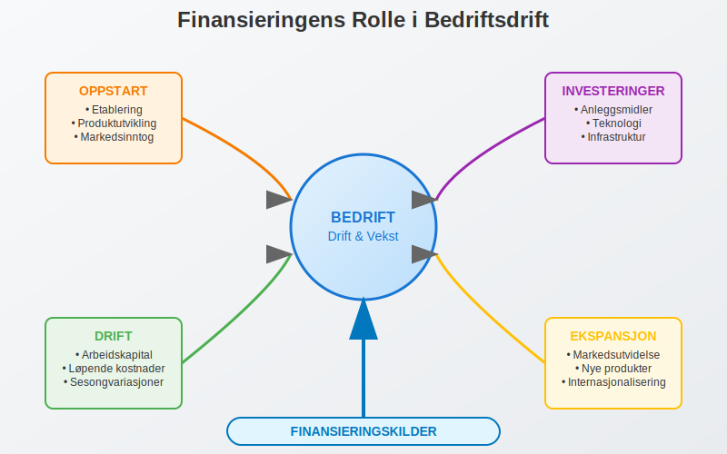
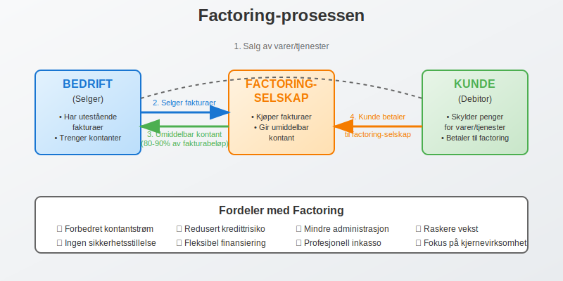
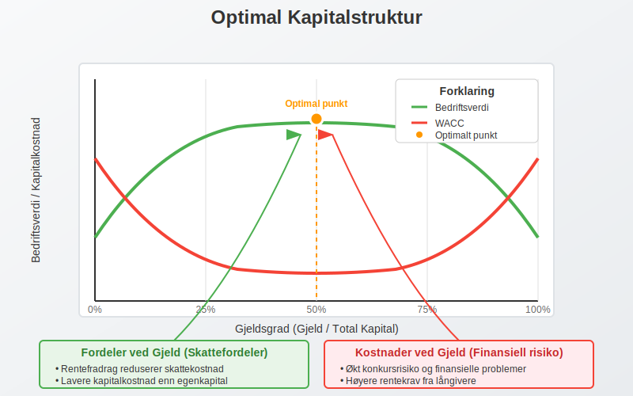
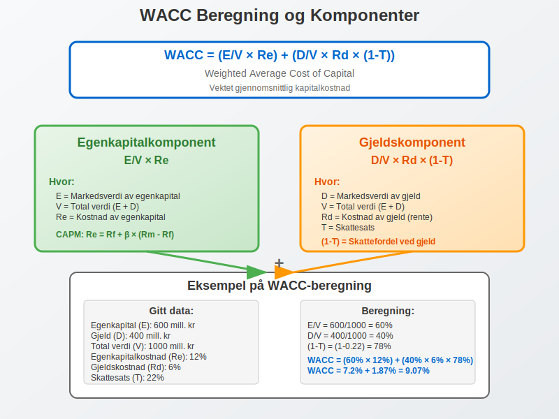
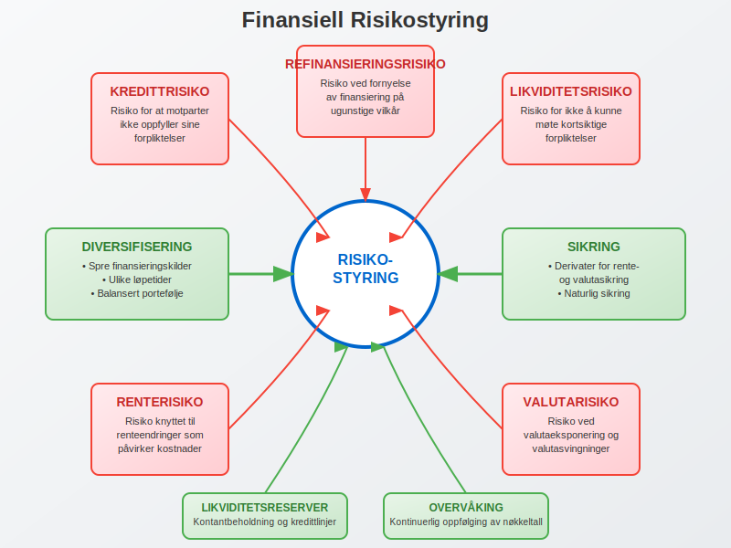

Finansiering er den kritiske prosessen med å skaffe kapital for å finansiere en bedrifts drift, investeringer og vekstambisjoner. Det er fundamentet som gjør det mulig for bedrifter å etablere seg, ekspandere og opprettholde konkurranseevnen i markedet. Denne omfattende guiden utforsker alle aspekter ved bedriftsfinansiering, fra grunnleggende konsepter til avanserte strategier.
Seksjon 1: Grunnleggende Finansieringskonsepter
1.1 Hva er Finansiering?
Finansiering refererer til prosessen med å tilføre kapital til en virksomhet for å møte dens finansielle behov. Dette kan være alt fra oppstartskapital for nye bedrifter til ekspansjonskapital for etablerte selskaper. Finansiering er nødvendig for:
- Oppstart av virksomhet: Innledende kapital for å etablere forretningsdrift
- Driftsfinansiering: Løpende kapital for daglig drift og arbeidskapital
- Investeringer: Kapital til anleggsmidler og langsiktige prosjekter
- Ekspansjon: Vekstkapital for markedsutvidelse og nye produkter
En velutarbeidet forretningsplan er essensielt for å identifisere finansieringsbehovet, velge riktig finansieringsform og presentere virksomheten overfor potensielle investorer og långivere.

1.2 Finansieringens Betydning i Regnskapet
Finansiering påvirker direkte bedriftens balanse og egenkapital. Valg av finansieringsform har betydelige konsekvenser for:
- Kapitalstruktur: Forholdet mellom egenkapital og gjeld
- Finansielle nøkkeltall: Soliditet, likviditet og rentabilitet
- Risikoprofil: Finansiell risiko og operasjonell fleksibilitet
- Kontroll: Eierskap og beslutningsmyndighet
Seksjon 2: Hovedkategorier av Finansiering
2.1 Egenfinansiering vs. Fremmedfinansiering
Den fundamentale inndelingen av finansiering skiller mellom egenfinansiering og fremmedfinansiering:

Egenfinansiering
Egenfinansiering innebærer tilførsel av kapital fra eierne uten forpliktelse til tilbakebetaling på bestemte tidspunkter. Hovedformer inkluderer:
- Aksjekapital: Innbetalt aksjekapital fra aksjonærer
- Tilbakeholdt overskudd: Reinvestert fortjeneste fra driften
- Egenkapitaltilskudd: Direkte kapitalinnskudd fra eierne
Fordeler med egenfinansiering:
- Ingen rentekostnader eller tilbakebetalingsforpliktelser
- Økt finansiell stabilitet og soliditet
- Større fleksibilitet i vanskelige perioder
- Bedre kredittrating og lånemuligheter
Ulemper med egenfinansiering:
- Utvanning av eierskap ved nye aksjonærer
- Høyere kapitalkostnad (egenkapitalavkastningskrav)
- Begrenset tilgang på kapital
- Potensielt tap av kontroll
Fremmedfinansiering
Fremmedfinansiering innebærer lån av kapital med forpliktelse til tilbakebetaling med renter. Hovedformer inkluderer:
- Banklån: Tradisjonelle lån fra finansinstitusjoner
- Obligasjoner: Verdipapirgjeld utstedt til investorer
- Leverandørkreditt: Utsatt betaling til leverandører
- Leasingavtaler: Finansiell leasing av eiendeler
Fordeler med fremmedfinansiering:
- Beholder full eierskap og kontroll
- Skattefradrag for rentekostnader
- Lavere kapitalkostnad enn egenkapital
- Større tilgang på kapital
Ulemper med fremmedfinansiering:
- Faste rentekostnader og tilbakebetalingsforpliktelser
- Økt finansiell risiko og konkursrisiko
- Krav til sikkerhet og garantier
- Restriksjoner gjennom lånebetingelser
2.2 Sammenligning av Finansieringsformer
| Finansieringsform | Kostnad | Risiko | Kontroll | Fleksibilitet | Tilgjengelighet |
|---|---|---|---|---|---|
| Egenkapital | Høy | Lav | Redusert | Høy | Begrenset |
| Banklån | Middels | Middels | Beholdt | Middels | God |
| Obligasjoner | Middels | Middels | Beholdt | Lav | Variabel |
| Leverandørkreditt | Lav-Middels | Lav | Beholdt | Høy | God |
| Leasing | Middels-Høy | Lav | Beholdt | Middels | God |
Seksjon 3: Spesialiserte Finansieringsformer
3.1 Fakturafinansiering og Factoring
Factoring er en spesialisert finansieringsform der bedrifter selger sine utestående fakturaer til en factoringselskap for umiddelbar kontant. Dette forbedrer kontantstrømmen betydelig.
Hovedtyper av factoring:
- Med regress: Bedriften bærer kredittrisikoen
- Uten regress: Factoringselskapet overtar kredittrisikoen
- Stille factoring: Kunden er ikke klar over factoring-arrangementet
- Åpen factoring: Kunden betaler direkte til factoringselskapet

3.2 Crowdfunding og Alternative Finansieringsformer
Moderne teknologi har åpnet for nye finansieringsformer som demokratiserer tilgangen til kapital:
Crowdfunding
Crowdfunding lar bedrifter samle inn kapital fra mange små investorer gjennom digitale plattformer. Hovedtyper inkluderer:
- Reward-based: Investorer mottar produkter eller tjenester
- Equity-based: Investorer mottar eierandeler
- Debt-based: Investorer låner penger mot renter
Crowdlending
Crowdlending (peer-to-peer lending) kobler bedrifter direkte med private långivere gjennom digitale plattformer, ofte med konkurransedyktige renter.
Investeringsselskaper
For investorer som ønsker profesjonell forvaltning av sin kapital, tilbyr investeringsselskaper en strukturert tilnærming til finansmarkedene. Disse selskapene samler kapital fra mange investorer og forvalter den profesjonelt, noe som gir tilgang til diversifiserte investeringsporteføljer og ekspertise som ellers ville vært utilgjengelig for mindre investorer.
3.3 Offentlig Støtte og Tilskudd
Offentlige finansieringsordninger kan være verdifulle supplement til privat finansiering:
- Innovasjon Norge: Støtte til innovasjon og internasjonalisering
- Forskningsrådet: Finansiering av forsknings- og utviklingsprosjekter
- EU-programmer: Horizon Europe og andre europeiske programmer
- Regionale utviklingsfond: Lokal næringsutvikling
Seksjon 4: Finansieringsstrategier og Planlegging
4.1 Kapitalstrukturoptimalisering
Optimal kapitalstruktur balanserer fordelene ved fremmedfinansiering (skattefordeler, lavere kostnad) mot ulempene (finansiell risiko, konkursrisiko). Modigliani-Miller-teoremet danner det teoretiske grunnlaget, men praktiske faktorer påvirker optimale valg:

Faktorer som påvirker optimal kapitalstruktur:
- Bransje og forretningsrisiko: Stabile bransjer kan tåle høyere gjeldsgrad
- Skatteposisjon: Høyere skattesats øker verdien av rentefradrag
- Vekstmuligheter: Vekstbedrifter trenger fleksibilitet
- Eiendelsstruktur: Materielle eiendeler kan stilles som sikkerhet
4.2 Finansieringsplanlegging og Timing
Effektiv finansieringsplanlegging krever:
Kortsiktig planlegging (0-12 måneder):
- Likviditetsplanlegging og kontantstrømstyring
- Arbeidskapitaloptimalisering
- Sesongvariasjoner og sykliske behov
Mellomlang planlegging (1-5 år):
- Investeringsfinansiering og ekspansjonsplaner
- Refinansiering av eksisterende gjeld
- Strategiske oppkjøp og fusjoner
Langsiktig planlegging (5+ år):
- Kapitalstrukturmål og finansieringsstrategi
- Langsiktig gjeld og refinansieringsstrategier
- Børsnotering eller exit-strategier
- Generasjonsskifte og eierstruktur
4.3 Finansieringskostnader og Verdsettelse
Kapitalkostnad (WACC)
Weighted Average Cost of Capital (WACC) er den gjennomsnittlige kostnaden for all kapital:
WACC = (E/V × Re) + (D/V × Rd × (1-T))
Hvor:
- E = Markedsverdi av egenkapital
- D = Markedsverdi av gjeld
- V = E + D (total verdi)
- Re = Kostnad av egenkapital
- Rd = Kostnad av gjeld
- T = Skattesats

Egenkapitalkostnad
Egenkapitalkostnaden kan beregnes ved hjelp av Capital Asset Pricing Model (CAPM):
Re = Rf + β × (Rm - Rf)
Hvor:
- Rf = Risikofri rente
- β = Beta (systematisk risiko)
- Rm = Markedsavkastning
- (Rm - Rf) = Markedsrisikopremie
Seksjon 5: Finansiering for Ulike Bedriftsfaser
5.1 Oppstartsfasen
Finansieringsbehov:
- Produktutvikling og markedstesting
- Innledende markedsføring og salg
- Grunnleggende infrastruktur og ansettelser
Typiske finansieringskilder:
- Personlig kapital og familie/venner
- Såkornfond og business angels
- Inkubatorer og akseleratorprogrammer
- Offentlige tilskudd og støtteordninger
- Crowdfunding for produktbaserte bedrifter
5.2 Vekstfasen
Finansieringsbehov:
- Skalering av produksjon og salg
- Markedsekspansjon og internasjonalisering
- Organisasjonsutvikling og systemoppgraderinger
Typiske finansieringskilder:
- Venturekapital og private equity
- Banklån med sikkerhet i eiendeler
- Mezzaninfinansiering (hybrid gjeld/egenkapital)
- Strategiske partnere og joint ventures
5.3 Modningsfasen
Finansieringsbehov:
- Effektivisering og kostnadsoptimalisering
- Diversifisering og nye forretningsområder
- Oppkjøp og konsolidering
Typiske finansieringskilder:
- Kontantstrøm fra drift (selvfinansiering)
- Obligasjonsutstedelser
- Banklån og kredittfasiliteter
- Børsnotering for større selskaper
Seksjon 6: Regnskapsføring av Finansiering
6.1 Regnskapsføring av Egenkapital
Egenkapitaltransaksjoner påvirker balansen direkte:
Aksjeemisjon:
Debet: Bank/Kontanter
Kredit: Aksjekapital (pålydende)
Kredit: Overkurs (eventuell overkurs)
For mer om overkurs og hvordan det påvirker egenkapitalen, se vår artikkel om overkurs.
Tilbakeholdt overskudd:
Debet: Årsresultat
Kredit: Opptjent egenkapital
6.2 Regnskapsføring av Gjeld
Gjeldsfinansiering registreres som forpliktelser:
Opptak av lån:
Debet: Bank/Kontanter
Kredit: Langsiktig gjeld
Rentekostnader:
Debet: Rentekostnad
Kredit: Påløpte renter/Bank
For detaljert forståelse av bokføring av finansielle transaksjoner, se vår omfattende guide.
6.3 Finansielle Nøkkeltall
Finansieringsstruktur evalueres gjennom sentrale nøkkeltall:
| Nøkkeltall | Formel | Tolkning |
|---|---|---|
| Egenkapitalandel | Egenkapital / Total kapital | Finansiell styrke og soliditet |
| Gjeldsgrad | Total gjeld / Egenkapital | Finansiell risiko |
| Rentedekningsgrad | EBIT / Rentekostnader | Evne til å betjene gjeld |
| Likviditetsgrad 1 | Omløpsmidler / Kortsiktig gjeld | Kortsiktig betalingsevne |
| Arbeidskapital | Omløpsmidler - Kortsiktig gjeld | Operasjonell likviditet |
Seksjon 7: Risikostyring og Finansiering
7.1 Finansiell Risiko
Hovedtyper finansiell risiko:
- Kredittrisiko: Risiko for at motparter ikke oppfyller sine forpliktelser
- Likviditetsrisiko: Risiko for ikke å kunne møte kortsiktige forpliktelser
- Renterisiko: Risiko knyttet til renteendringer
- Valutarisiko: Risiko ved valutaeksponering
- Refinansieringsrisiko: Risiko ved fornyelse av finansiering

7.2 Risikomitigering
Strategier for risikomitigering:
- Diversifisering: Spre finansieringskilder og løpetider
- Sikring: Bruk av derivater for rente- og valutasikring
- Likviditetsreserver: Opprettholde kontantbeholdning og kredittlinjer
- Covenant-overvåking: Følge opp lånebetingelser og nøkkeltall
- Scenario-planlegging: Forberede for ulike markedssituasjoner
7.3 Finansiell Beredskap
Robust finansiell beredskap inkluderer:
- Likviditetsreserver: 3-6 måneders driftskostnader i kontanter
- Ubenyttede kredittfasiliteter: Fleksible kredittlinjer
- Diversifiserte finansieringskilder: Ikke avhengig av én kilde
- Sterke bankforbindelser: Gode relasjoner med finansinstitusjoner
- Kontinuerlig overvåking: Regelmessig oppfølging av finansielle nøkkeltall
Seksjon 8: Fremtidige Trender i Finansiering
8.1 Digitalisering og Fintech
Teknologisk utvikling transformerer finansieringslandskapet:
- Automatiserte lånesøknader: AI-basert kredittvurdering
- Blockchain og kryptovaluta: Nye former for finansiering
- Open Banking: Bedre tilgang til finansielle tjenester
- Regtech: Automatisert compliance og rapportering
8.2 Bærekraftig Finansiering
Økende fokus på miljø, samfunn og styring (ESG):
- Grønne obligasjoner: Finansiering av miljøprosjekter
- Bærekraftslån: Renter knyttet til bærekraftsmål
- Impact investing: Investering med samfunnseffekt
- ESG-rapportering: Krav til bærekraftsrapportering
8.3 Regulatoriske Endringer
Nye reguleringer påvirker finansieringsmarkedet:
- Basel III/IV: Strengere kapitalkrav for banker
- MiFID II: Økt transparens i finansmarkeder
- GDPR: Databeskyttelse i finansielle tjenester
- Bærekraftsregulering: EU-taksonomien og CSRD
Konklusjon
Finansiering er en kritisk suksessfaktor for alle bedrifter, uavhengig av størrelse og bransje. Valg av finansieringsform og -strategi har langvarige konsekvenser for bedriftens vekst, risikoprofil og verdiskaping.
Nøkkelprinsipper for effektiv finansiering:
- Tilpass finansiering til bedriftens livssyklus og spesifikke behov
- Diversifiser finansieringskilder for å redusere risiko
- Optimaliser kapitalstruktur basert på bransje og strategi
- Overvåk finansielle nøkkeltall kontinuerlig
- Planlegg langsiktig men behold fleksibilitet
- Bygg sterke relasjoner med finansielle partnere
- Hold deg oppdatert på nye finansieringsformer og reguleringer
Ved å forstå og anvende disse prinsippene kan bedrifter sikre tilgang til nødvendig kapital for å realisere sine ambisjoner og skape langsiktig verdi for alle interessenter.
For dypere innsikt i spesifikke finansieringsformer og regnskapsmessige aspekter, utforsk våre detaljerte artikler om egenfinansiering, factoring, og andre relaterte emner i vår omfattende regnskapsguide.